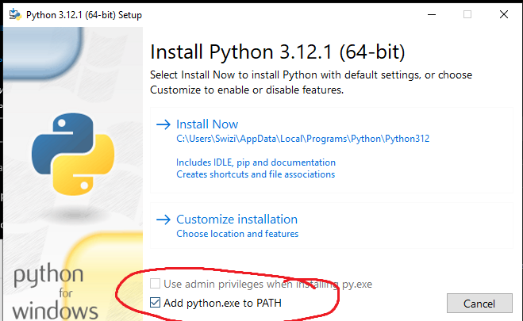
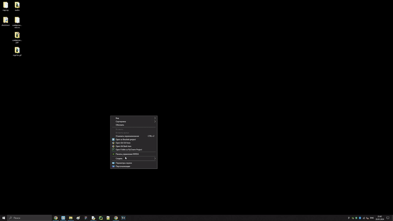

Для запуска нужно:
- Установить python https://www.python.org/downloads/
- При установке выбрать пункт Add python.exe to Path 
- Установить git https://git-scm.com/
- Как установить пакеты для проектов

- Создать папку
- В ней правой кнопкой мыши нажать на Open git Bash here
- написать pip install и нужный пакет
- Например pip install moviepy
- Если выдаст ошибку, значит переустановить питон и не забыть поставить галочку в пункте 2!
19.01.24
Выключение компьютера
import os
choice = input("shutdown? (y or n)")
if choice == 'y' or choice == 'Y':
os.system('shutdown /r')
else:
print('exiting')
20.01.24
Извлечь аудио из видео файла
#для работы модуль editor (может работать с субтитрами)
import moviepy.editor
from pathlib import Path
video_file = Path('my_video.mp4')
# обращаемся к классу VideoFileClip
# и передаем путь до файла
video = moviepy.editor.VideoFileClip(f'{video_file}')
# вырежем аудиодорожку из видео
audio = video.audio
#stem - обрезает формат после точки и добавляем mp3
audio.write_audiofile(f'{video_file.stem}.mp3')
Шифрование файла с текстом семмитричным шифрованием
import pyAesCrypt
#нужно ввести пароль для шифрования
password = input('Введите пароль для файла:')
#encrypt
pyAesCrypt.encryptFile('data.txt', 'data.txt.aes', password)
#decrypt
pyAesCrypt.decryptFile('data.txt.aes', 'dataout.txt', password)
Шифрование pdf файла
from PyPDF2 import PdfWriter, PdfReader
from getpass import getpass
#создаем объекты классов
pdfwriter = PdfWriter()
pdf = PdfReader('api.pdf')
#получаем все страницы файла
for page in range(len(pdf.pages)):
#читаем и добавляем каждую страницу
pdfwriter.add_page(pdf.pages[page])
#создадим пароль
password = getpass(prompt='Введите пароль: ')
#шифруем файл
pdfwriter.encrypt(password)
#открываем файл на запись в бинарном режиме
with open('protected.pdf', 'wb') as file:
#записываем с помощью метода write
pdfwriter.write(file)
Шифрование pdf файла паролем
from PyPDF2 import PdfWriter, PdfReader
from getpass import getpass
#создаем объекты классов
pdfwriter = PdfWriter()
pdf = PdfReader('api.pdf')
#получаем все страницы файла
for page in range(len(pdf.pages)):
#читаем и добавляем каждую страницу
pdfwriter.add_page(pdf.pages[page])
#создадим пароль
password = getpass(prompt='Введите пароль: ')
#шифруем файл
pdfwriter.encrypt(password)
#открываем файл на запись в бинарном режиме
with open('protected.pdf', 'wb') as file:
#записываем с помощью метода write
pdfwriter.write(file)